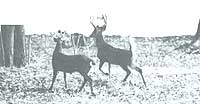
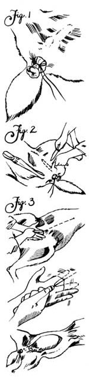
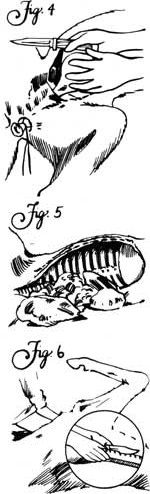

Field-Dressing And Skinning Big Game
September/October 1984
Homestead Handbook
by David Harper
It's hunting season again. Time for those who savor the flavor of venison, elk, and antelope roasts to attempt to lay in a supply of healthful, low-fat meat for the winter.
Each fall hundreds, perhaps thousands, of newly successful hunters are faced with the problem of how to handle a large meat animal once it's been reduced to possession. Because many of these nimrods lack the skills necessary to properly process their kills, a lot of meat is wasted, and even more is tainted-giving wild game an undeserved reputation of being "strong," "gamey," or "wild tasting."
So if you plan to head for field or woods this year as a meat hunter but have no experience in dressing, transporting, and skinning deer-size animals, read on as the author shares his 24 years of game-handling experience with you.
Keep in mind, too, that the information that follows isn't just for antelope, deer, and elk hunters ...similar techniques can be used to skin and dress midsize livestock such as goats and sheep, and thus can be valuable skills for any meat-eating homesteader to master.
T he first factor to influence the flavor of an animal's meat comes into play with the squeeze of a trigger or the release of an arrow. Was it a clean, fast kill that dropped the game in its tracks ...or a poor shot that required several arrows or bullets to finish off the wounded and terrified beast? In the latter case, expect subtle but nonetheless detectably unpleasant flavors from the adrenaline that was pumping through the animal's body those last few panicked minutes of life. And if a bullet or arrow penetrated organs other than heart, lungs, or brain, expect even worse. In short, if a hunter can't be sure of making a humane, killing shot, then he or she has no right to waste an animal's life for what may well turn out to be inedible, or at least inferior, meat.
But let's assume you won't take a shot unless you can be reasonably sure of killing cleanly. What else do you have to know?
Prehunt Preparation
Before you take to the woods, you'll need to collect the accoutrements necessary for field-dressing and transporting a large animal. If you know that you'll be able to haul your game out the same day it's killed, you can get by with just a sharp knife, a small whetstone, a plastic bag for liver and heart (assuming you enjoy such cuts), a foot or so of heavy string, and a few yards of rope. (If you're after elk, you'd best carry two knives-one small and sharp, the other large and sharp-plus a good sharpening stone.)
When hunting in a more remote area where you may be forced to leave all or part of the meat in the wilds overnight, you'll need a bit more gear: a cheesecloth game bag to keep flies from "blowing" (laying eggs in) the meat, and a bone saw or hacksaw to aid in quartering the carcass for packing out. And while one strong individual can hoist a deer into a tree with nothing but a rope, you'll need a small block and tackle to get an elk of the ground.
Field-Dressing
Always approach a downed animal with caution. (I once had my shin sliced open by a kick from a "dead" deer.) After you're certain the animal is down for keeps, unload your gun and place it out of harm's way. If your state mandates immediate tagging of big game, do it now. Then, if the ground slopes, pull the animal around so that its head is uphill, and roll it over onto its back. (You may have to prop rocks or logs under its sides to keep it belly-up.)
Every experienced hunter knows that the first two things you do in the field-dressing process are [1] cut the animal's throat to "bleed it out" and [2] remove the musk sacs from the hind legs if it's a male. Right?
Wrong and wrong.
[1] The animal is dead. The heart is no longer pumping. All you'll accomplish by slitting its throat is to dump a few ounces of blood onto the hide and mess up some neck meat.
[2] Musk glands? The idea is to get rid of them so the foul liquid they contain won't contaminate the meat. But it's the rare hunter who can slice and pull those sacs free without getting some of that same nasty stuff on his or her hands ...hands which will then contaminate all the meat they touch while dressing out the animal. I've found it safer just to avoid touching the musk glands; if you don't bother them, they won't pollute your meat.
What you do want to do as soon as possible after the kill is to remove the sex organs and open the belly from rectum to sternum to get at the viscera (internal organs). It's messy, hard work that requires a sharp knife and an even sharper eye, plus some energy and patience. But it's not really difficult . In the next few paragraphs I'll lay out what I've found to work best under most circumstances, with most animals. You may read or hear about another method somewhere else. Fine; there's more than one way to skin a cat-or a deer, elk, antelope, sheep, or goat.
The first step (Fig. 1) is to seal off the vent so that feces can't escape. Use a thin-bladed, very sharp knife to "core" around the anal opening so that you can grasp and pull it out far enough to tie it of with stout string.
Next, make an incision around the sex organs and remove them (Fig. 2). But to avoid piercing the bladder or intestines, cut no deeper than necessary; try not to get into the body cavity.
Now comes the major incision. Start just ahead of the rectum and draw your knife forward, slicing carefully with the blade rather than "stabbing" in with the tip. When the opening is several inches long and the intestines begin to bulge out, insert your free hand and push the entrails down and away from the abdominal wall. Then turn the knife over so that the cutting edge is up, and place the blade into the opening just ahead of your hand (Fig. 3). Cut slowly, holding the viscera away from the knife to prevent puncturing the intestines. Stop the cut at the base of the breastbone (sternum).
With that done, locate the bladder, cut it loose, and attempt to remove it without spilling the contents (Fig. 4). With the pee-sac out, pull the rectum through from the inside, cutting away any remaining tissue holding it in place. Roll the animal onto one side, reach into the body cavity, and cut loose any tissue anchoring the entrails to the abdominal wall; then roll the carcass over and free up the other side. Now sever the gullet (esophagus) just ahead of the stomach, and use both hands to drag the whole works out onto the ground (Fig. 5). If you wish to save the liver, allow it to cool, then drop it into the plastic bag you brought along for that purpose.
Good. Now it's time to move up in the world of field-dressing ...to the chest cavity. Cut through the diaphragm (a membrane separating the chest from the abdominal cavity), reach up into the chest as far as you can, and sever both the gullet and the windpipe (Fig. 6). Give these two tubes a tug and they should come out with the heart and lungs. After the heart has cooled, put it in the bag with the liver.
Finally, roll the carcass over onto its stomach to dump the blood that will have pooled in the body cavity.
That's it. Your animal is field-dressed.
Out of the Woods ...
A strong person can sling a dressed-out antelope, or even a small deer, over his or her shoulders and carry it out-as long as "out" is downhill or fairly level ...which is one reason behind the old saying "Always hunt uphill." But, in most situations, you're going to wind up dragging your kill. (If you ever do carry an animal, be sure to cover its head with a bright red or orange cloth-don't take a chance on meeting an unethical hunter who might shoot at a bobbing pair of antlers!) Stuff the plastic bag containing heart and liver into the animal's chest cavity, produce your length of rope, throw a noose around the base of both antlers (or around the neck if there are no antlers), and get on with it.
Are you stuck in camp a few days waiting for the rest of your party to fill their tags before you can get home with your meat? If so, since rapid and thorough cooling is important to insure good flavor, it's best to go ahead and split the breastbone, then prop the body cavity open with sticks cut to length. Slip the carcass into a cheesecloth game bag and hang it, head-up for better drainage, on the north side of a large shade tree, high enough to be out of the dust and away from four-legged nocturnal visitors. If you can't cool the heart and liver in an ice chest, it's best to either eat them right away or toss them out for scavengers.
Though some hunters and even guides prefer skinning an animal out if it must be kept in camp for a few days, my experience has been that it's better to leave the hide on until you get home. What little flavor might be lost as a result of slower hide-on cooling is more than made up for by the protection this natural wrapper provides for the meat, both while it is hanging in camp and while it is being transported.
...And Home
No single action marks a hunter as inexperienced and egotistical Lister that) hauling a game animal home strapped across the hood of a car. After all, few things can ruin meat faster or more thoroughly than exposing it to engine heat and high speed airflow (air that's most likely filled with dust, pollution, and bugs).
The only sensible places to haul big game animals are inside a vehicle, or (covered with tarp) in the bed of a truck. If you don't own a truck, van, or station wagon, see if the carcass will fit into the trunk of your car-or even in the backseat (on a tarp to protect t the upholstery). If there's absolutely no alternative, wrap the animal in a heavy waterproof tarp and lash it to the trunk. That way the meat will at least be out of the brunt of road wind, have some protection, and be politely hidden from the eyes of those who really aren ' t impressed by the sight of large, dead animals. (In some states, it's actually illegal to trills port a big game animal strapped on the exterior of a vehicle.)
Skinning
Back home, you'll need to rig a gambrel (Fig. 1), which is nothing more than a rack for hanging an animal by its back legs. Scrounge up a three-foot length of rebar or other small-diameter rod or pipe (a sturdy limb will do if nothing better is available), plus a few feet of rope, and you're in the gambrel business.
Now find a place to hang the animal for skinning. An open garage or shed is ideal. A basement or other cool, clean indoor area will also serve the purpose. Hang the carcass outside, as from a tree or clothesline pole, only as a last resort.
Once you've located a suitable overhead support, position the gambrel components and the carcass beneath it. Feel around just below the animal's hocks for the "empty" space between the cannon bone and the Achilles tendon, and use a sharp knife to open a slit to each leg just long enough to run the gambrel rod through. (Be careful not to cut the tendon, or you'll have nothing to hang the animal by.) Slip the rod through both legs, spread the legs as far apart as you can (to facilitate both skinning and cooling), and tie them to the gambrel so they won't tend to slide toward each other when you hoist the carcass.
Now tie a section of rope from one end of the rod to the other, just outside the legs, leak ing enough slack to form an inverted V when you tie the hoisting rope to the center of this "bridle." Toss the rope over the support, haul the animal up until its head is clear of the ground, and tie off the other end of the rope (Fig. 8).
Since the hide is no longer needed to protect the meat, the sooner you peel it off, the tastier your steaks and roasts will be. (And yes, you have to skin your own game even if you plan to have it butchered professionally, since most butchers won't mess with it and most states don't allow hide-on carcasses to be even brought into meat-processing plants )
Let's get with it, starting with the back legs (Fig. 9). Using a thin-bladed knife (I prefer an inexpensive fish-filleting model), cut around the legs just above each hock (remembering that "above" is now upside down). You'll know you've cut deep enough when the white of hide turns to the red of muscle.
Now use the tip of the blade to slice down the inside of both legs; these two cuts should meet at about the point where the genitals used to be. The next incision was begun during, the field-dressing operation-that long cut down the belly from rectum to sternum. now you can extend that, slicing up the center of the chest to just below the jaw. (No need to split the breastbone. Let the butcher worry about it, or do it after the hide's off.)
Move to the front (bottom) of the carcass and make the same cuts on the forelegs that you used for the back. Your final cut will be around the neck, just below the jaw.
Muscles are encased in membranous sacks and separated from the hide by a few more thin layers of membrane. The trick to skinning is to peel the hide away from the muscles without damaging either the skin (assuming you want to save it for tanning) or the meal ...and that thin membranous layer is what allows you to do it.
Start by grabbing the hide where you cut around one of the back legs. Pull it out and down, working around the leg as you go. When you get both hind legs peeled down to the rump, you're likely to encounter some fat. The best bet here is to leave the waxy substance attached to the meat; that way you'll have a buffer in case you slip with the knife. After the hide's off, you can remove the fat ...which you'd be wise to do, since fat imparts a gamey, strong taste to wild meat-just the opposite of the effect it has on grain-fattened domestic livestock.
If you work the fingers of one hand between the hide and meat while you tug out and down with the other, you should be able to peel back great swaths at a time once you're past the legs. But sooner or later (probably sooner), the hide will get ornery. You'll tug all the harder, and some of the meat will come of with the skin. Now's the time to bring the tip of that razor-sharp knife back into action. Gently slice the meat away from the hide, working the blade carefully in between the skin and that ever-so-thin muscle casing.
When you reach the shoulders, allow the hide to "hang out" while you peel the front legs back to meet it.
Your last skinning job-and the toughest because the hide is usually thickest there-is the neck. You'll probably have to use the knife frequently to help things along.
The reason we didn't sever the head before skinning out the neck (which, on first appearances, would seem to be the thing to do) is that antlers (or even ears, if that's all your animal came equipped with) make good "handles" to grab when manipulating the carcass while skinning. Cut the head off after the hide is removed, by slicing down the spine with your knife and sawing through the bone with a hacksaw. And since you've got the saw at hand, go ahead and remove the front legs at or just above the knee joints.
How Long to Age?
If you're planning to have a professional do the cutting-up chores, lower the animal, remove the rear legs at the hocks, wrap the "naked" carcass in a clean sheet or piece of cheesecloth, and haul it to the butcher. He can age it in his meat locker.
On the other hand, if you're doing the butchering yourself, the aging time will be dictated by the temperature of the area where the meat is hung. In warm weather, it's best to go ahead and butcher in the morning of the following day, then "age" the wrapped meat in the refrigerator for a few days before freezing. However, if it's cool enough for frost at night, you can safely let the meat hang for several days.
There can be no argument that wild meat is more healthful than its "industrialized" commercial counterpart. But what it tastes like depends almost entirely on the skill and care exercised in its handling from kill to table.
The things that spoil meat are [1] a shot that doesn't kill fast and clean, [2] poor handling during field-dressing or transportation, [3] too little or too much aging (cooling) time before processing, and [4] sloppy butchering ...which is meat for another article entirely.
|
 |
 |
 |
 |
|
|